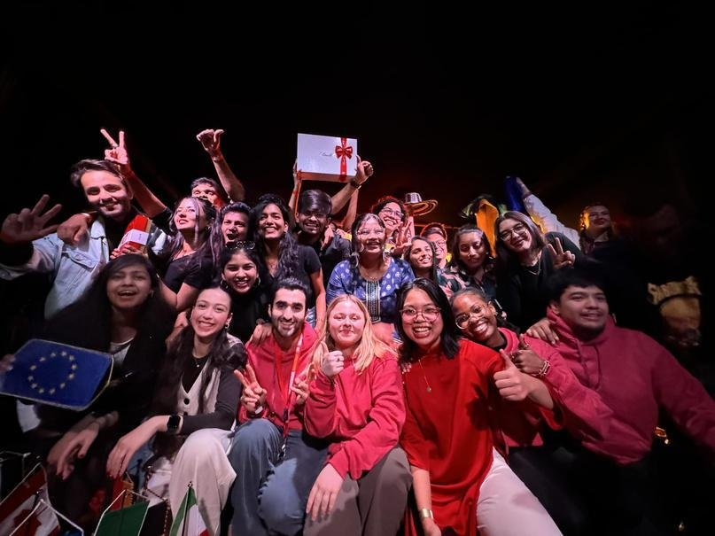

1.
03.1 / Flagship Cultural Event
One World Fiesta 2024
Coordinated Schmalkalden’s largest cultural festival with a 30-member team, uniting students from 4 continents and 10+ countries through fashion, dance, cuisine, and music.
Event Attendance
300+ Guests
Instagram Reach (2 Weeks)
2,500 → 10,000+


